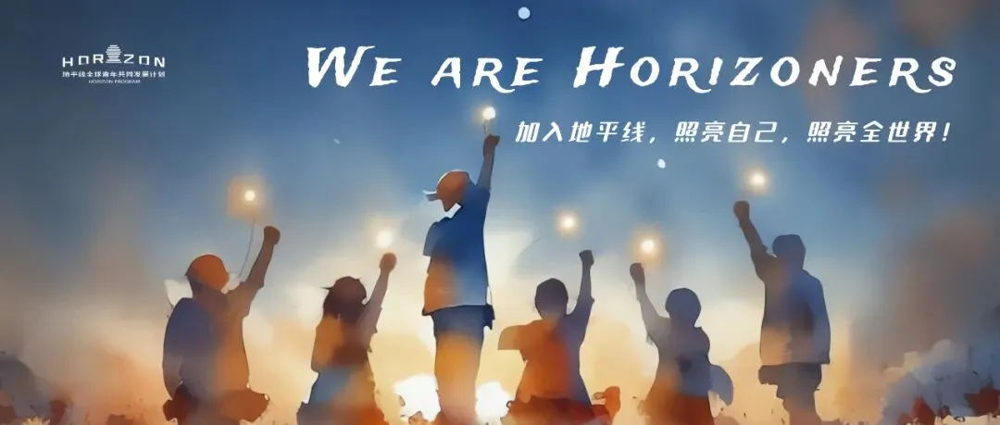
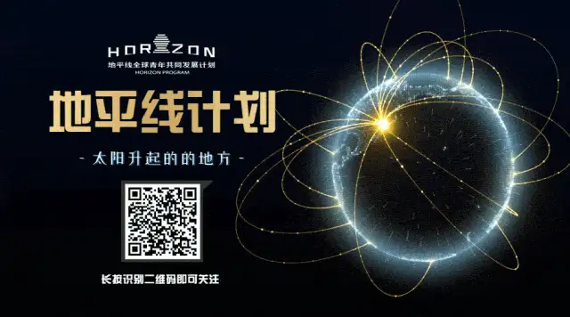
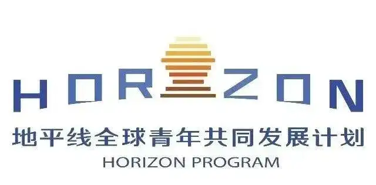

以下文章来源于地平线Horizon计划 ，作者horizon计划

地平线计划汇集国际组织、全球著名高校、中央和地方各级党政机关、国内外著名企业和金融机构等众多高端优质资源，共同打造的全球青年共同发展项目。目前成员分布于众多国际组织、国内外顶级高校以及政府部门、头部企业和社会组织。

文案：刘子菡 刘凯闻 周元方正
排版：丁恒洋

往期精彩推荐
激活青年力量 共筑健康星球：2025青年气候行动与减灾创客活动圆满落幕
预告｜清华大学IUP中文中心“星耀计划”三期走进南京中外青少年创新实践活动即将开启！
让语言成为光，照亮文明的星河——“言说·2025”美国高校暑期在京中文教学项目演讲比赛成功举办
决赛来袭｜2025青年气候行动与减灾创新黑客松迎来终极对决！
推荐｜2025普林斯顿中国论坛 · 北京场开放报名——本周日，同襄盛举
推荐｜2025 CIIC创投周 · 哈佛中国创新与投资峰会（上海站）观众报名开启
推荐 | 智启未来·青年共筑：YEAH论坛携手第二届绿色极客大会重磅来袭！
全球征片｜2025年联合国中文日暨总台第五届海外影像节等你来参赛
预告｜激活青年力量共筑健康星球：2025青年气候行动与减灾创客活动即将启航
回顾 | 星耀再启，共创未来——清华大学IUP中心“星耀计划”二期中外青少年创新实践活动圆满结束
预告｜清华大学IUP中心“星耀计划二期”中外青少年创新实践活动即将开启！
回顾 |以梦为马，携手前行——清华大学IUP星耀计划一期青少年训练营圆满结束
地平线计划2025新年献词|觉醒的沉默大多数，进击的青年新生代

“地平线全球青年共同发展计划”汇集了来自国际组织、全球著名高校、中央和地方各级党政机关、国内外著名企业和金融机构等众多高端优质资源，秉承"点燃青春梦想，助力人生成长，培育领军人才，引航青春力量"的宗旨，致力于对标联合国SDGs各项议程和具体目标，唤醒青年参与可持续发展议程的意识，激励青年投身可持续发展事业，支持青年可持续发展的各项实践，培育青年可持续发展领军人才，凝聚全球可持续发展领域的青年智慧和力量，推动全球青年将可持续发展付诸实际行动。